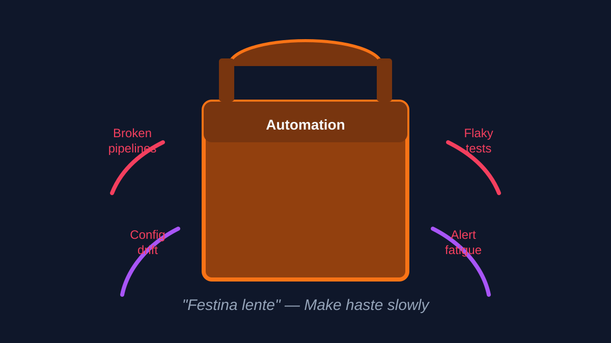
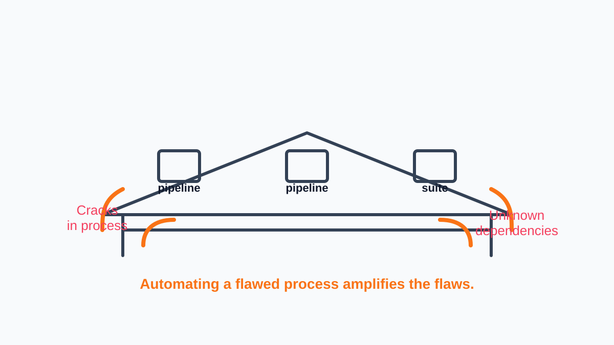
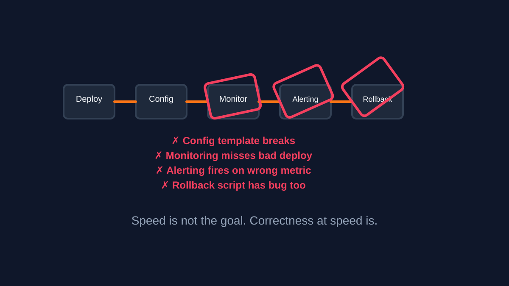
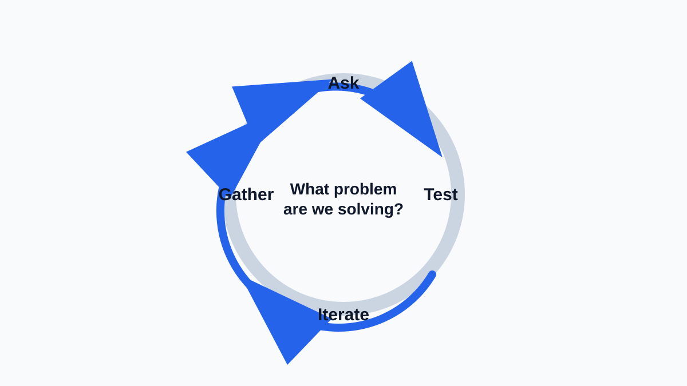
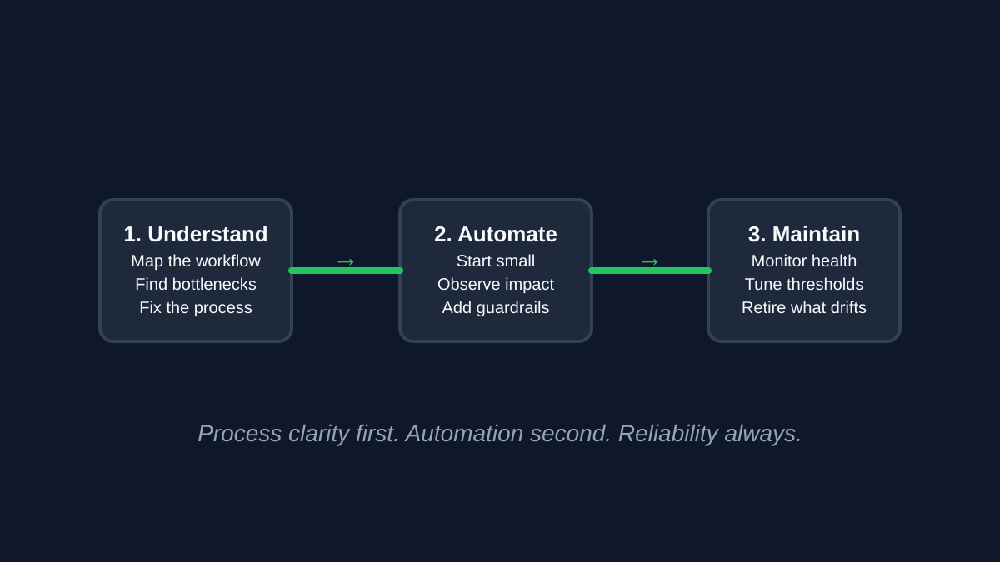

Part 3 of the DevOps Dirty Dozen Series: Festina lente — make haste slowly.
Insight: Encourages careful planning before rushing into automation.
DevOps was supposed to guarantee seamless automation, but too often, it can bring forth disarray and disorder. Automation meant to usher in stable pipelines and repeatable processes can wreak havoc on deployments and undermine the very principles DevOps was built upon. Why does chaos seem to persist? What makes it so destructive? And how can we bring to bear essential tools to deliver on DevOps’ promise of stable and repeatable deployments?
Originally published on LinkedIn.

Automation is powerful. Automating the wrong thing makes the problem worse, faster.
The Anatomy Of Automation Chaos
Automation’s potential is immense, but its misuse opens a Pandora’s Box of unintended consequences. Poorly planned automation is like building on a shaky foundation — it magnifies inefficiencies, accelerates failure, and creates complexities that are difficult to unwind. This anti-pattern, often born from haste, reflects the classic mistake of addressing symptoms rather than root causes.
Key drivers of automating chaos include:
- Band-Aid Solutions: Teams under pressure often rush to automate problematic workflows instead of redesigning them. While this may provide a short-term win, it locks in inefficiencies and perpetuates dysfunction.
- Lack of Process Clarity: Automation efforts that skip the crucial step of mapping out workflows risk embedding errors into the system, making them more difficult to identify and resolve later.
- Overconfidence in Tools: A shiny new automation tool can tempt teams to implement it prematurely, leading to poorly planned integrations.
- Tool Overload: Too many automation tools, implemented without a cohesive strategy, create overlapping processes and obscure accountability.
- Siloed Decisions: Automation strategies designed without cross-team input often ignore downstream impacts, creating bottlenecks and misalignment.

Automating a flawed process amplifies the flaws. Fix the process first, then automate.
The Cost Of Automating Chaos
The aftermath of automating chaos involves significant time and resources dedicated to troubleshooting, repairing, and reworking automated processes. This reactive approach means teams spend more time fixing what is broken rather than pushing forward on new features or improvements.
When automation goes awry, the fallout can be significant:
- Faster Failures: Automation amplifies the speed of flawed processes, turning small inefficiencies into large-scale problems.
- Erosion of Confidence: When automation leads to disruptions rather than improvements, trust in DevOps practices and leadership diminishes.
- Increased Technical Debt: Quick fixes add layers of complexity, creating a brittle system that becomes harder to maintain over time.
- Lost Time and Resources: Efforts to fix poorly automated workflows divert attention from innovation and value-driven work.

Speed is not the goal. Correctness at speed is.
Why Chaos Happens In The First Place
In the fast-paced tech industry, there is often intense pressure to release products or updates swiftly. This urgency can lead teams to adopt automation solutions hastily, without thorough planning or consideration of long-term impacts.
- Pressure to Deliver Quickly: Teams often rush into automation under tight deadlines, prioritizing speed over strategy.
- Leadership Blind Spots: Leaders may view automation as a universal fix, without understanding the underlying process issues.
- Inadequate Training: Teams may lack the expertise to evaluate processes critically before automating them.
- Tool Mismanagement: Adopting tools without clear ownership or alignment leads to fragmented automation efforts.
- Resistance to Change: Teams may automate outdated processes because redesigning them feels too disruptive.
Breaking Down Chaos
Before any automation tool is implemented, a comprehensive analysis of current workflows is necessary. This involves mapping out each step and understanding who is responsible for what, with the end goal of identifying bottlenecks or redundancies. Teams should use process mining techniques or workflow analysis to gather data on how tasks are currently performed. This step is crucial to ensure that automation targets the right areas for improvement and does not merely automate chaos. It is about asking, “Is this process even worth automating?” or “Can we streamline this before automation?”
To avoid automating chaos, teams must focus on discipline and collaboration:
- Understand Before Automating: Conduct thorough assessments of workflows to identify inefficiencies and unnecessary steps before introducing automation.
- Start Small and Scale Thoughtfully: Begin with automating a small, well-understood process and monitor its impact before expanding.
- Prioritize Cross-Team Collaboration: Ensure all relevant stakeholders are involved in automation decisions to prevent siloed thinking and unintended consequences.
- Invest in Observability: Implement monitoring and logging tools that provide insight into automated processes, helping to identify and address issues early.

Treat automation as an experiment: understand the problem, test the solution, and refine based on evidence.
Applying The Scientific Method
The initial step is about setting the foundation for why automation is even being considered. Teams should ask critical questions like, “What specific problem are we trying to solve with this automation?” or “Is the process we are looking at actually a bottleneck, or does it just feel inefficient due to lack of understanding?” These questions help focus efforts and ensure that automation addresses real, not perceived, issues.
The scientific method can serve as a guide for effective automation:
- Ask Questions: What problem are we solving? Is this process worth automating?
- Gather Data: Analyze workflows and identify inefficiencies before automating.
- Form Hypotheses: Define the expected outcomes of automation.
- Test and Observe: Pilot automation on a small scale and evaluate its effectiveness.
- Iterate: Refine workflows and automation based on feedback and outcomes.
Carl Sagan’s Baloney Detection Kit
Before automating any process, it is crucial to challenge the fundamental assumptions about why automation is needed. Is the process actually inefficient, or does it only seem so because of lack of understanding or training? Is there a possibility that the current process is fundamentally flawed and needs redesign rather than automation? This step involves critically examining the status quo, questioning whether automation is the right response or if it is just a band-aid for deeper issues.
As Carl Sagan’s Baloney Detection Kit suggests, critical thinking is essential:
- Question Assumptions: Is this process worth automating, or is it fundamentally flawed?
- Seek Evidence: What data supports the decision to automate? Are the benefits measurable?
- Test Before Scaling: Are there simpler solutions that achieve the same result? Can automation be introduced incrementally?

Process clarity first. Automation second. Reliability always.
Moving Forward Together
Automation in the context of DevOps holds transformative potential, promising to streamline operations, reduce human error, and drive innovation. However, to harness this potential without descending into chaos, a structured and thoughtful approach is imperative:
- Understand the Problem: Before any automation tool is implemented, it is crucial to have a deep understanding of the problem space. Is it due to poor process design, lack of training, or an over-reliance on manual processes where automation could genuinely improve matters?
- Build Stable Processes: Automation should not be the first step in process improvement. Instead, it should come after processes have been refined and stabilized. Map out workflows, eliminate unnecessary steps, and ensure the process is as lean as possible before automating it.
- Foster Collaboration: Automation decisions should not be made in isolation. Involvement from various teams — development, operations, quality assurance, security, and business stakeholders — ensures that automated solutions are holistic and consider the entire system’s health.
- Continuous Improvement: Automation should be part of a continuous improvement cycle. Post-implementation, teams should regularly revisit automated processes to tweak, optimize, or reconsider automation if the benefits are not as expected.
This disciplined approach can help organizations avoid the pitfalls of automating chaos, leading to stable, repeatable, and efficient workflows that embody the true spirit of DevOps.
What is your experience with automation gone awry? Have you witnessed the consequences of automating chaos, or found strategies to prevent it? Let us share insights and solutions as we continue breaking down the DevOps Dirty Dozen.
References
- The DevOps Handbook by Gene Kim, Patrick Debois, John Willis, and Jez Humble
- Continuous Delivery by Jez Humble and David Farley
- The Three Ways: Principles Underpinning DevOps
- DevOps Institute
- Arrested DevOps Podcast